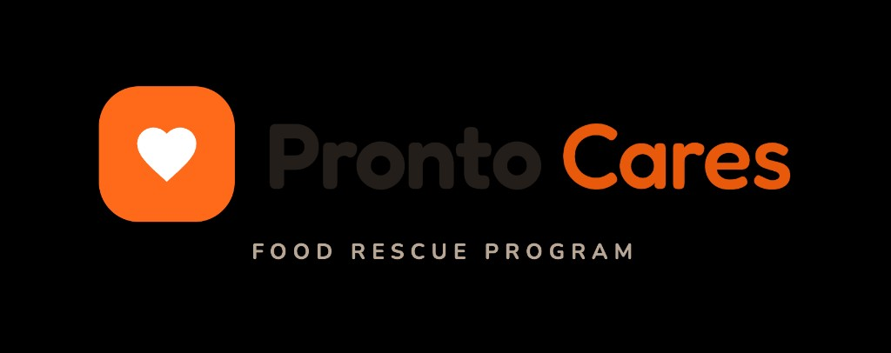

Rescue Match & Dispatch
We match surplus food to recipient need and the nearest available driver, then route it using live telemetry, ETAs, and safe-hold windows.

Pronto Cares — Rescue · Route · Deliver
Pronto Cares matches rescued food to the neighbors who need it — routing every delivery, safeguarding every meal, and caring for recipients across the community.
Our Mission
Rescued food arrives from many kitchens with unknown handling history, and many of the people we serve have serious allergies or no way to reach help. So we treat safety as the first commitment we make on every single delivery.
How We Do It
We match surplus food to recipient need and the nearest available driver, then route it using live telemetry, ETAs, and safe-hold windows.
Before anything is routed, we check perishability, allergens, and recipient health profile. Unsafe items are rerouted or rejected.
We confirm each drop-off, capture needs, and flag missed check-ins so a real person can intervene quickly.
Our Impact
Ask the Guardian
Our Safe-to-Eat Guardian checks any rescued item against a recipient in seconds — temperature, allergens, and safe-hold time — and returns deliver, reroute, or reject with policy-grounded reasoning.
Tap the chat button in the corner to start.
For Partners and Technical Teams
Explore the end-to-end architecture, data flows, and policy grounding model in the technical view.
Open architecture viewYour gift turns food that would have been wasted into a safe, dietary-matched meal for a neighbor who needs it today.
Donate to Pronto Cares